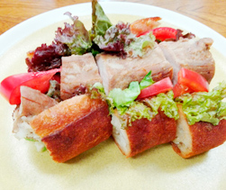

ローストポークのバケットサンド
- 調理時間：90 分
- （一人当たり）
- カロリー：362kcal
- たんぱく質：28.5g
- 脂質：10.5g
- 炭水化物：37.5g
- 塩分：2.2g

＜2人分＞
- 豚ヒレ肉
- 200g
- 塩
- 小さじ1
- コショウ
- 少々
- ローズマリー
- 1本
- 玉ねぎ（薄切り）
- 40g
- サニーレタス
- 2～3枚
- トマト（薄切り）
- 1/2個
- マスタード
- 適量
- マヨネーズ
- 大さじ1
- バケット
- 20㎝くらい

- 豚肉に塩、コショウをすり込み、30分ほどおき、水分をふき取る。
ローズマリーを間に挟む。 - 天板にクッキングシートをしき、豚肉をのせて200℃に予熱したオーブンで20分焼く。
焼き上がりの状態をみて、火の通りが不安な場合は追加加熱を行う。
串を指して、透明な肉汁が出たら焼き上がり。 - 焼き上がった豚肉をアルミホイルで包み、20分ほどおいて、余熱で火を通す。
出来上がれば、お好みの厚さに切り分ける。 - マスタードとマヨネーズを混ぜ合わせる。
野菜は下準備する。 - バケットは横半分に切り込みを入れ、内側に④のマヨネーズを塗る。
スライスした玉ねぎ、トマト、サニーレタスをはさみ、ローストポークをいれてラップで丸ごと包んでなじませる。
食べるときに食べやすい大きさに切り分ける。
ローストポークのバケットサンド
とんかつ、生姜焼き、ギョウザなど、代表的な家庭料理に「豚肉」が並ぶのは、味はもちろん価格も安定しているから。また、部位間の味の差が少なく、幅広い調理法で楽しめるのも魅力のひとつです。肉類は、筋肉や血液を新しく作りかえるたんぱく質やビタミンB群も豊富に含まれます。中でも豚肉は、糖質の代謝を助け、美容と疲労回復に欠かせないビタミンB1が群を抜いて多いので夏の疲れが出ている方におすすめです。